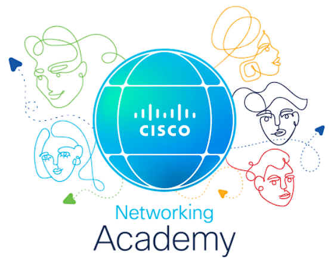
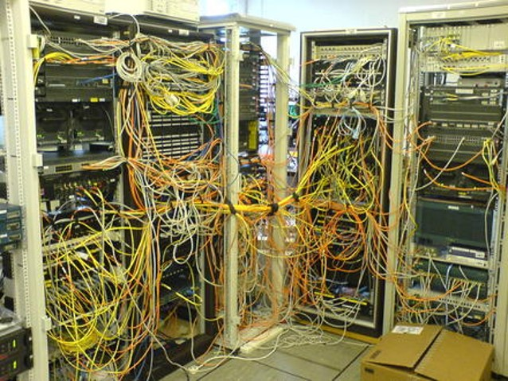
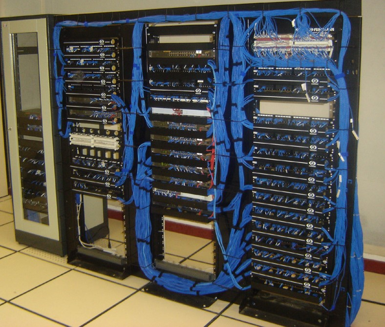
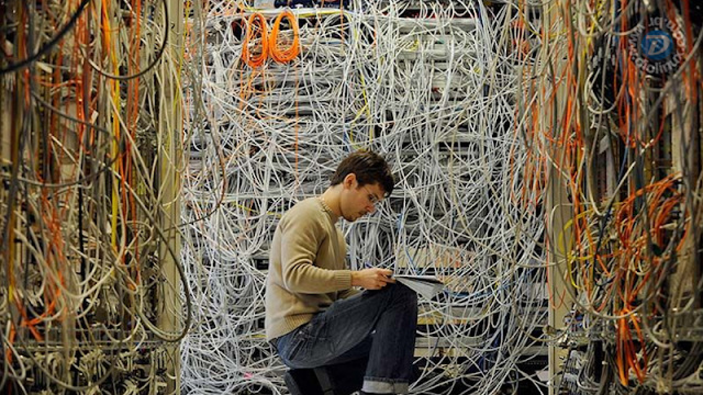
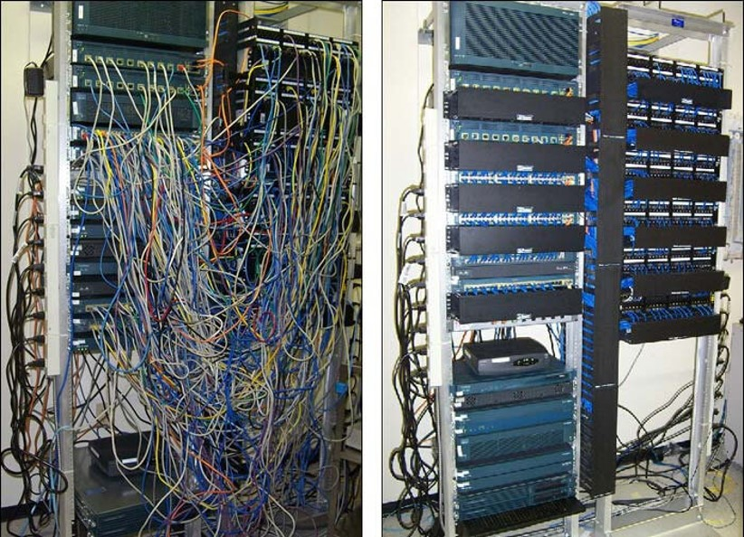
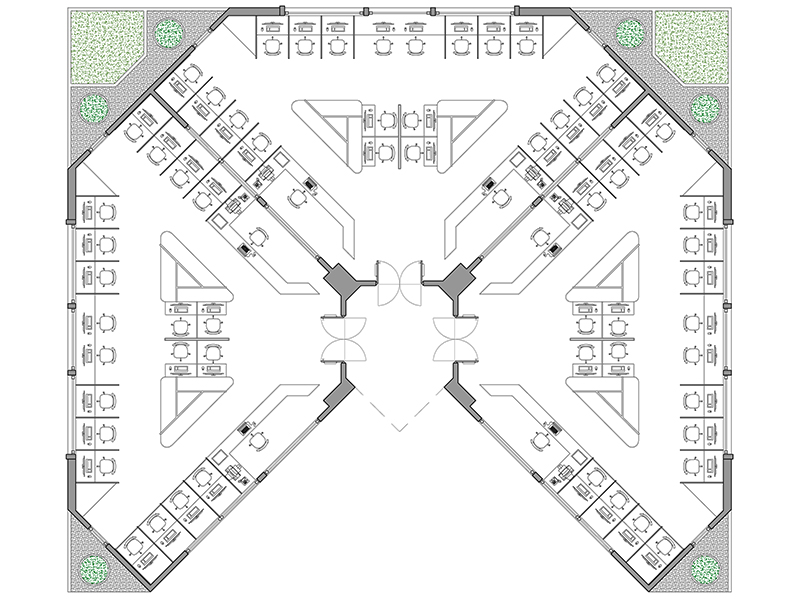
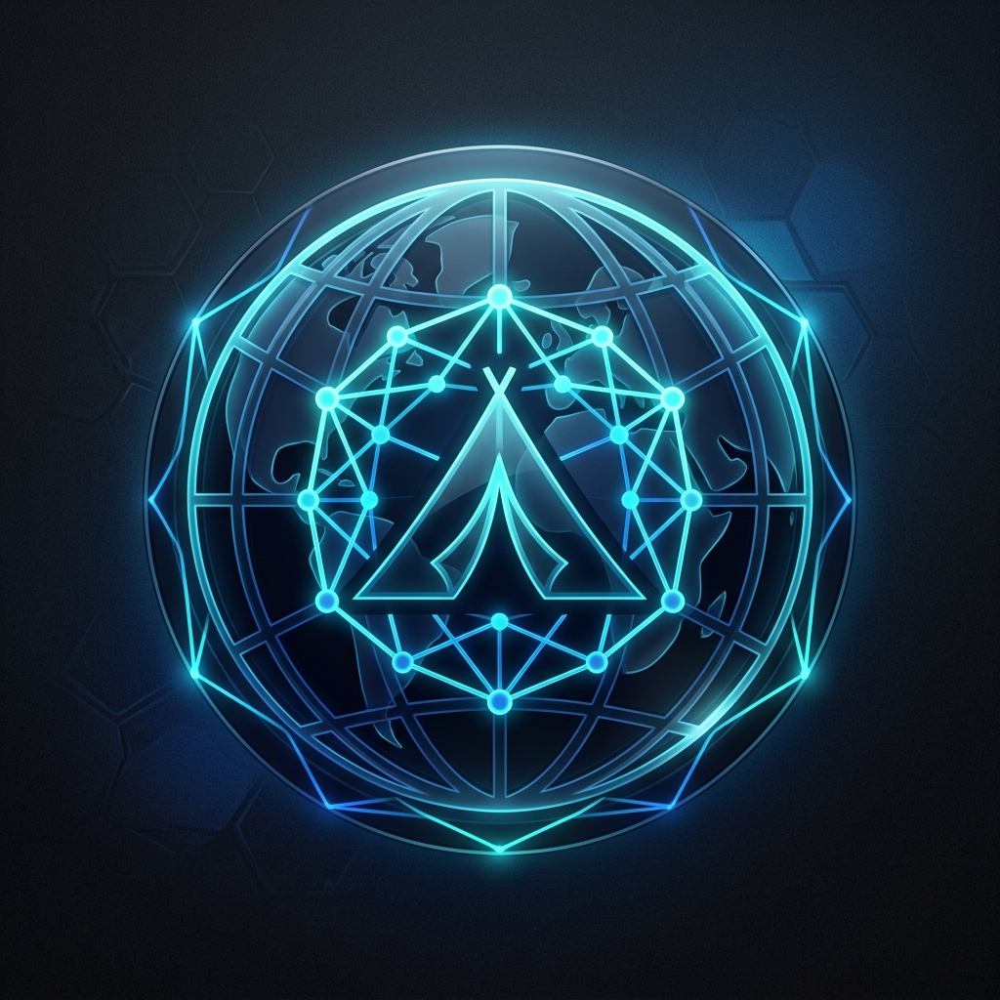

Aula 01: O Kick-off
Professor Jhones Sena
🔗 linkedin.com/in/jhonessena/
✉️ profjhonessena@gmail.com
Objetivo da disciplina:
Dominar os fundamentos, ferramentas e práticas de redes de computadores para projetar, simular e solucionar problemas de conectividade e comunicação em sistemas modernos.
| 1ª Etapa | 2ª Etapa | 3ª Etapa |
|---|---|---|
| 5pts – Aulas | 5pts – Aulas | 10pts – Aulas |
| 5pts – Atividades | 10pts – Atividades | 10pts - Prova F |
| 15pts - Prova | 15pts – Prova | 25pts - Prova |
Entrega do Artigo Científico
A forma de avaliação no final do semestre contará com a produção e entrega de um artigo científico abordando os temas estudados.
Este trabalho será fundamental para consolidar a pesquisa, prática e a teoria explorada nas missões da disciplina.
Fundamentos de Redes de Computadores
BARRETO, Jeanine et al.
Grupo A, 2018
Redes de Computadores e Internet (6ª ed.)
COMER, Douglas E.
Grupo A, 2016
Série Tecnologia e Organização da Informação
PALETTA, Francisco C.
Editora Blucher, 2020

👨💻 O que é o NetAcad?
Para acessar a plataforma, você precisará do seu e-mail de convite.
netacad.com
Fique atento à sua caixa de entrada para ativar sua conta oficial da turma!
"Rede é um conjunto de dispositivos..."
...interligados para compartilhamento de recursos, informações e serviços.





Instalar um Call Center de alta densidade em um galpão de vão livre com exatamente 200m², operando em regime de missão crítica.
Requisitos de Ocupação (103 posições ativas)
🚫 Proibição de Redes Sem Fio
Para garantir estabilidade máxima do tráfego de voz (VoIP) e sistemas internos, o uso de Wi-Fi
para as estações é estritamente proibido.
Não haverá tráfego de dados operacionais sem fio.
🎯 103 Pontos para 1 Destino
Todos os cabos de rede de todas as posições devem convergir fisicamente para uma única Sala de Telecomunicações.
O Data Center Local (CPD) será o coração exclusivo da operação.
Como é a primeira aula, queremos apenas ativar sua imaginação de engenheiro(a):
🤔 Onde colocar as mesas?
Como desenhar o layout para caber as 103 posições sem virar uma bagunça e deixando espaço para as pessoas andarem?
🔌 Por onde passam os fios?
Nenhum computador tem Wi-Fi. Por onde você vai passar mais de 100 cabos de rede sem que as pessoas tropecem neles?
❄️ Onde fica a Sala do Servidor?
Onde alocar essa sala (o "coração" da operação) para que os cabos não fiquem excessivamente longos pelo escritório?
⚠️ E a organização final?
Imagina 103 cabos chegando todos juntos na porta da sala do servidor. Como você faria para não virar um ninho de rato?
A sua equipe deve entregar um croqui unifilar ou planta baixa, justificando:

O MUNDO SEM INTERNET
"Imagine o mundo sem internet?
A Vida de um Nômade Digital em uma Rede Resiliente."
Desenhar uma infraestrutura de comunicação e conhecimento Off-Grid.
Foco em sobrevivência a apagões e censura.
Produção de Pesquisa Aplicada em Formato de Artigo (em
PDF).
Trabalho Exclusivamente em Duplas.
Teremos 6 Artigos no total. Cada dupla constrói uma "peça"
desse grande quebra-cabeça.
Servidor de Conhecimento Offline
Foco: Arquitetura de um servidor local (inspirado
no Project NOMAD) para prover DNS, Wikipedia, cursos e mapas sem acesso à WAN.
Como usar um Raspberry Pi ou hardware de baixo custo para isso?
Comunicação Resiliente
Foco: Estudo de protocolos offline-first
(como o CMLK) operando sobre LoRa ou rede local.
Como garantir que as mensagens cheguem ao destino mesmo sem um provedor de internet ativo?
Redes Mesh e Bitchat
Foco: Criação de redes em malha (Mesh) via
Bluetooth BLE ou Wi-Fi descentralizado.
O estudo de caso será o app BitChat (que usa BLE e o protocolo Nostr) para comunicação
resistente à censura.
Sincronização Assíncrona de Dados
Foco: Estratégias de store-and-forward para
replicação de arquivos.
Como dados são armazenados nos dispositivos enquanto viajam e sincronizam assim que encontram um
novo nó da rede?
Transações Offline
Foco: Como transferir valor (dinheiro) sem
internet?
Estudo do uso de eCash/Cashu (utilizado no Bitchat) para pagamentos via Bitcoin que são
validados offline e sincronizam depois.
Agentes de IA Locais e Off-Grid
Foco: Implantação de Modelos de Linguagem (LLMs)
leves dentro do servidor offline local.
Como auxiliar a comunidade com buscas, agricultura ou saúde sem precisar da AWS ou OpenAI?